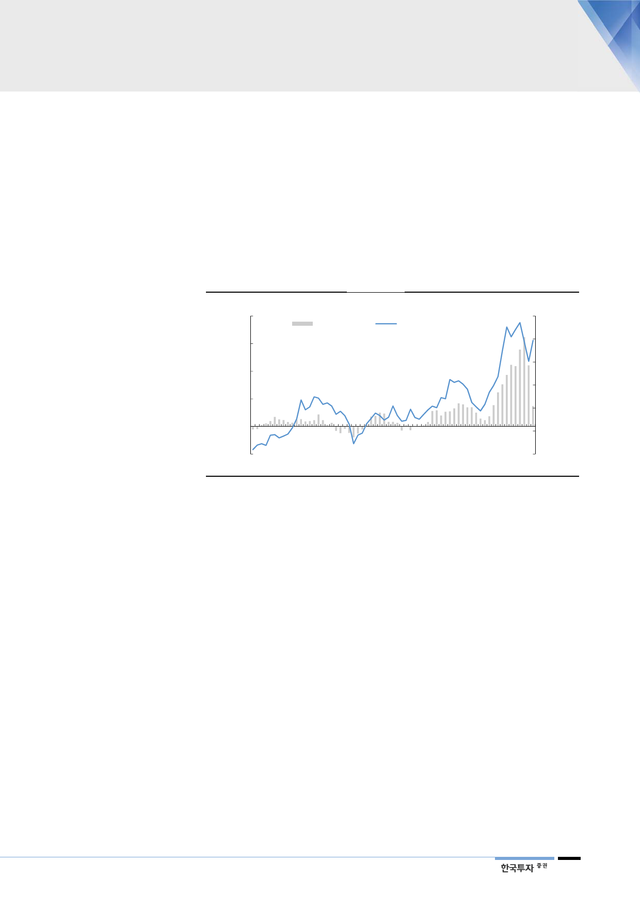

빨라진 주가 움직임을
따르자
주가는 비정상적인
(abnormal) 상황을
반영하지 않았다
SK하이닉스의 주가는 연초 57,700원을 저점으로 38% 상승했다. 그 기간 동안
메모리가격과 실적 전망은 지속적으로 하향됐다. 결과적으로 현재 주가는 과거
밸류에이션으로도, 올해 실적으로는 설명하기 어려운 수준까지 높아졌다. 하지만
작년 SK하이닉스 주가는 5월 23일 고점을 보였고 디램 고정가격 하락은 10월부
터 시작됐다. 영업이익도 2018년 4분기부터 감소하기 시작했다. 주가가 메모리
가격과 실적에 약 6개월 선행한 셈이다. 직전 하락사이클의 저점이 2016년 6월
에, 주가는 5월에 저점을 보였던 과거와는 다른 주가 움직임이다. 주가의 업황 선
행이 더 빨라졌다.
[그림 3] SK하이닉스 분기 영업이익과 주가
(십억원)
8,000
6,000
4,000
2,000
0
영업이익(좌)
주가(우)
(원)
90,000
75,000
60,000
45,000
30,000
15,000
(2,000)
0
1Q03 1Q05 1Q07 1Q09 1Q11 1Q13 1Q15 1Q17 1Q19F
자료: SK하이닉스, 한국투자증권
주가가 실적이나 업황의 움직임을 과거 대비 더 빠르게 반영하는 이유는 메모리,
특히 디램의 가격 상승과 하락이 정상적인 범위를 벗어났다고 봤기 때문이다.
2016년 3분기부터 상승하기 시작한 디램가격은 2018년 3분기까지 109%(PC
디램 고정가격 기준) 상승했다. 하지만 그 기간 수요는 서버디램을 제외하고는
모두 약세로 돌아섰다. 디램가격이 상승하면서 구매자들의 수요둔화가 나타났기
때문이다. 서버디램을 제외한 디램수요가 약세를 보이고 있음에도 가격이 지속적
으로 상승했던 2018년 이익증가 부분에 대해서 주가는 반영하지 않아 SK하이닉
스 주가 밸류에이션은 실적 대비 상승하지 못했다. 2017년에는 PER 3배 수준에
머물렀고, 2018년 5월 주가 고점에서 SK하이닉스 PER은 6.2배, PBR은 1.4배
수준에 머물렀다
2018년 4분기에 서버디램 수요가 급감하면서 디램가격도 급락하기 시작했다. 하
지만 지난 4분기 서버디램은 전분기대비 33%, 전년대비 13% 감소해 과거에 경
험하지 못한 약세를 보였다. 서버디램을 포함한 전체 디램 수요도 전분기대비
11% 감소, 전년대비 5% 증가했다. 디램 수요가 전분기대비 11% 감소한 경우는
지난 4분기가 처음이다. 주가는 일시적으로 연초 57,700원까지 하락해 PBR 0.8
배까지 하락했지만 이후 급반등 했고 현재 주가는 PBR 1.1배 수준이다. 결국 주
가는 비정상적인 가격상승과 수요부진을 오래 반영하지는 않는다고 할 수 있다.
3